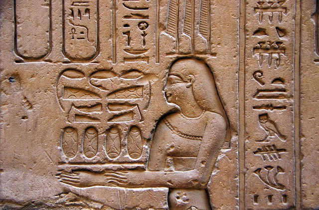

Franklin Breaks Record
On this day in history in 1799 was found the Rosetta Stone, a granodiorite stele, inscribed with three versions of a decree issued at Memphis, Egypt in 196 BC during the Ptolemaic dynasty on behalf of King Ptolemy V. The top and middle texts are in Ancient Egyptian using hieroglyphic script and Demotic script, respectively, while the bottom is in Ancient Greek. As the decree has only minor differences between the three versions, the Rosetta Stone proved to be the key to deciphering Egyptian hieroglyphs.
The stone, carved in black granodiorite during the Hellenistic period, is believed to have originally been displayed within a temple, possibly at nearby Sais. It was probably moved during the early Christian or medieval period, and was eventually used as building material in the construction of Fort Julien near the town of Rashid (Rosetta) in the Nile Delta. It was rediscovered by a French soldier during the Napoleonic campaign in Egypt. British troops defeated the French in Egypt in 1801, and the original stone came into British possession under the Capitulation of Alexandria and was transported to London. It has been on public display at the British Museum almost continuously since 1802, and is the most-visited object there.